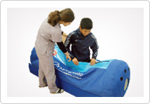

Non-surgical joint treatmentin stages
First stage
ultrasound and injection therapy

- Trigger Point Injection
Trigger point injection is used to treat myfascial pain syndrome (muscle contractions). Patients feel even more pain 1-2 days afteradministration of the injections, but their pain will be relieved within 2–3days. - Prolotheraphy
Prolotheraphyinvolves the injection of an irritant solution into the area of connective tissue that has been weakened or damaged by injury or strain. In the case of weakened or torn connective tissue, there will be induced inflammation and the release of growth factors at the site of theinjury. - Hyruan injection
This is a common way of curingthe early stages of arthritis by injecting Hyruan into inside a joint
Second stage
physical therapy and kinesitherapy

ICT(Interferential Current Therapy), US(Ultrasound Treatment), Kinesitheraphy, Tens(infrasonic treatment)
Third stage
extracorporeal shock wave therapy
This technology involvesphysically changingthe nerve cell membrane so that the brain is not aware of the pain.
It alleviates pain by inducing a chemical shift and compound formation. ESWT promotes new blood flow and
regenerates tissues. In particular, it is a therapythat efficientlycures damaged tendons.
Fourth stage
hyperbaric oxygen therapy

Hyperbaric oxygen therapy provides cells with more oxygen and restores oxygen to oxygen depleted areas.When there amputated limbs have been replanted, there has been muscle or ligament damage, during the time period from the inflammatory to the recoveryperiod, the oxygen supply is replenished and recovery is promoted.
Hyperbaric oxygen therapy is helpful after a sporting eventsin that it can encourage fast recovery, boost energy, strengthenworn-out muscle, burn fat and improve exercise capacity.